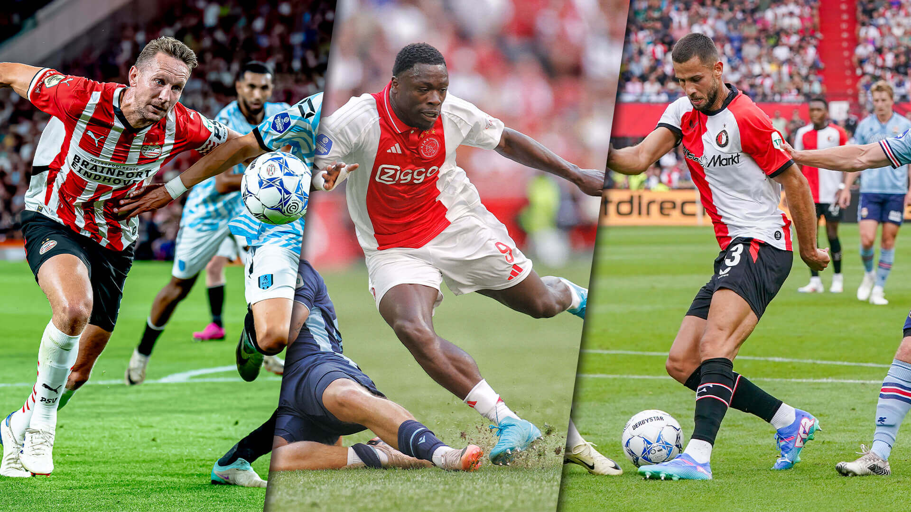

Eredivisie
De Eredivisie is de hoogste professionele voetbalcompetitie in Nederland, opgericht in 1956. Het wordt beschouwd als een van de sterkste competities in Europa, en teams die daarin spelen behoren tot de beste van het land. Hier zijn enkele belangrijke aspecten van de Eredivisie: Opzet van de competitie: Aantal teams: De competitie bestaat uit 18 teams. Speelsysteem: Elk team speelt twee keer tegen elk ander team, een keer thuis en een keer uit, wat resulteert in 34 speelronden. Puntensysteem: Teams krijgen drie punten voor een overwinning, één punt voor een gelijkspel en nul punten voor een verlies. Het team met de meeste punten aan het eind van het seizoen wint de titel. Promotie en degradatie: Het team dat onderaan eindigt (18e plek) degradeert rechtstreeks naar de Eerste Divisie, ook bekend als de Keuken Kampioen Divisie. De teams die 16e en 17e eindigen, spelen play-offs tegen clubs uit de Eerste Divisie om degradatie te voorkomen.
Topclubs en rivaliteit
Ajax, PSV en Feyenoord zijn de Grote Drie van de Eredivisie. Deze clubs hebben door de jaren heen de meeste titels gewonnen. Rivaliteiten zoals "De Klassieker" (Ajax tegen Feyenoord) en "De Topper" (Ajax tegen PSV) zijn enkele van de meest bekende duels Nederlandse voetbalgeschiedenis.